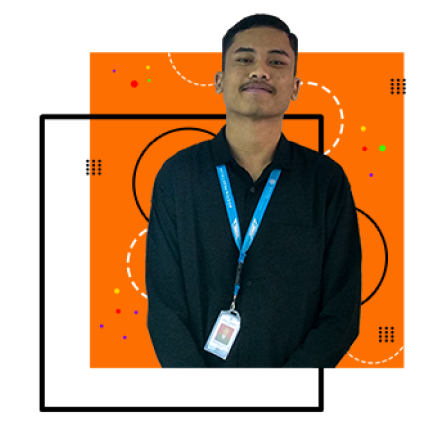

Hi, It’s me
I Komang Radita Suardhana
And I’m Frontend Developer
& UI/UX Designer
I am a Frontend Web Developer and UI/UX Designer based in Indonesia. I strive to build immersive and beautiful websites through carefully crafted code and user-centred design.
Hire Me
